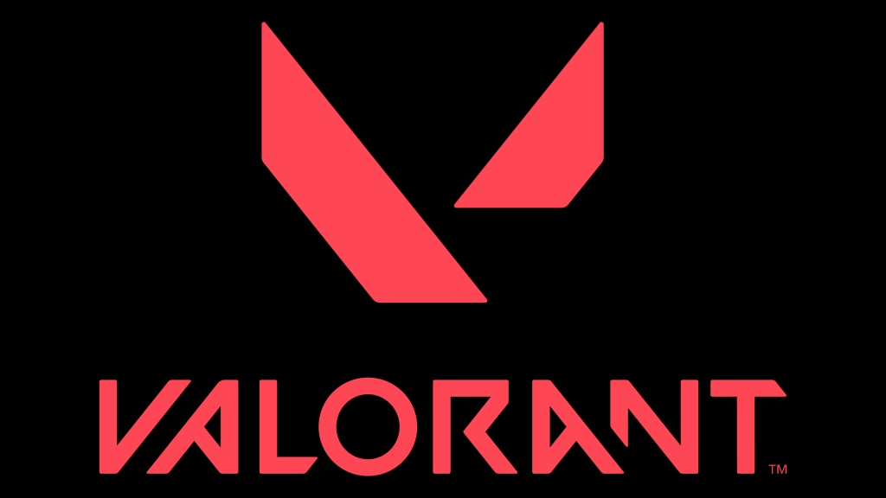
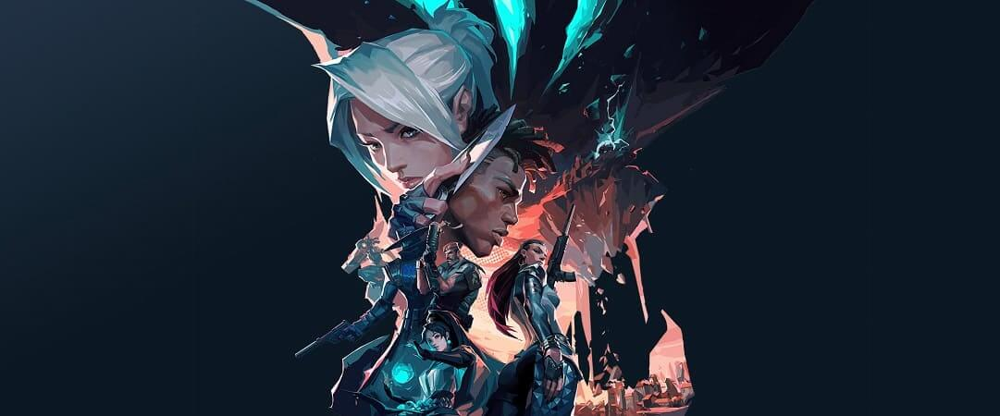
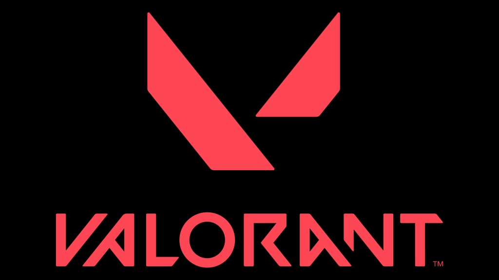
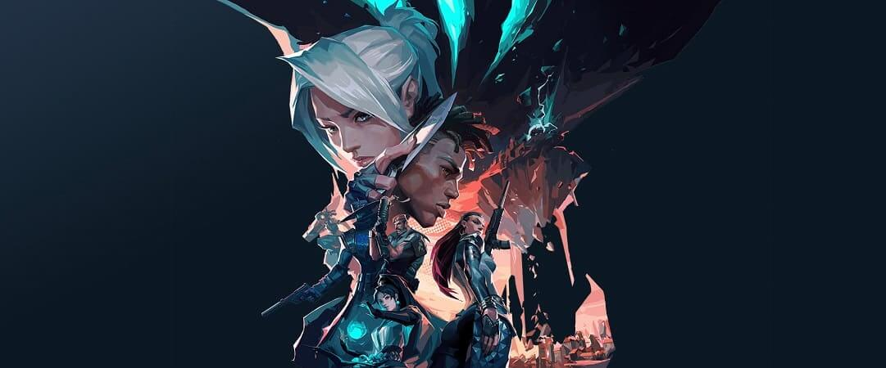
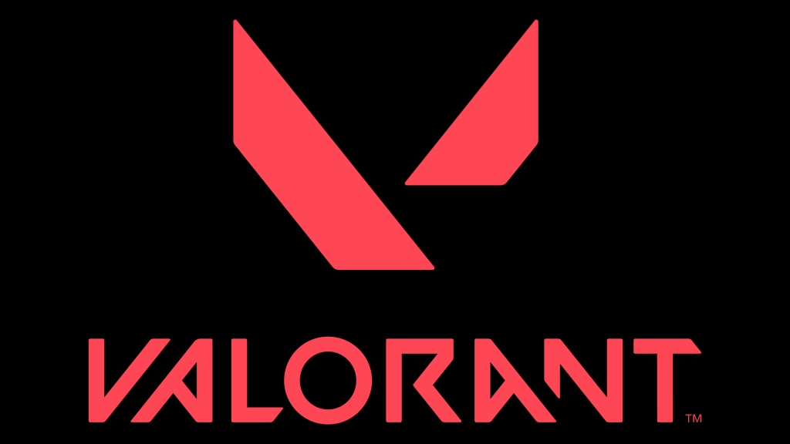
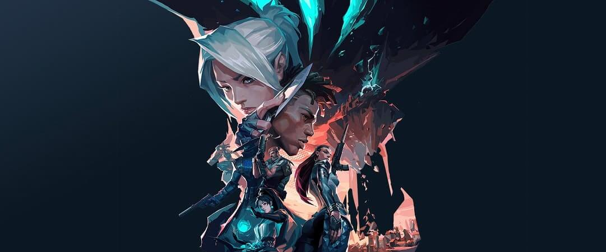

| Lunes | Martes | Miercoles | Jueves | Viernes | Sábado | Domingo | |
|---|---|---|---|---|---|---|---|
| Horas | Desde las 10am hasta las 2pm | Desde las 10am hasta las 2pm | Desde las 12am hasta las 4pm | Desde las 2pm hasta las 6pm | Desde las 12am hasta las 4pm | No | Desde las 10am hasta las 2pm |
Valorant es un shooter táctico en primera persona desarrollado por Riot Games, desarrollador de League of Legends. Lanzado en 2020, ha ganado popularidad rápidamente en la comunidad de jugadores. Ambientado en una Tierra cercana al futuro, Valorant enfrenta a un grupo de cinco jugadores, cada uno de los cuales elige personajes conocidos como "agentes", cada uno con habilidades y funciones únicas, en los bandos ofensivo y defensivo en los distintos campos El juego combina disparos de precisión, juego táctico por equipos y las habilidades únicas de cada agente. Los equipos se turnan para atacar y defender los campos de minas, con el equipo atacante tratando de plantar el Spike (o bomba) mientras que el equipo defensor intenta desactivar el Spike y el primer equipo en ganar trece rondas se asegura la victoria en una partida.

